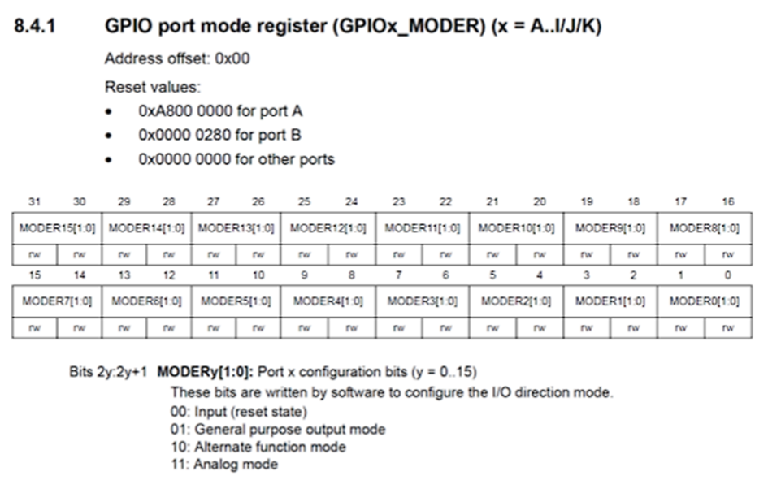
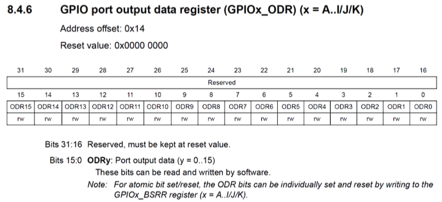
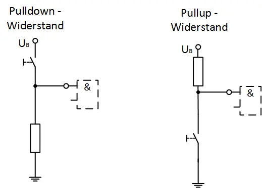
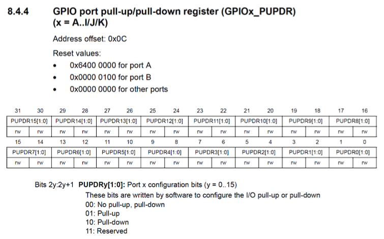

GPIO – General Purpose Input / Output
Bevor GPIO-Pins konfiguriert oder verwendet werden können, muss die zugehörige Hardwareeinheit im Mikrocontroller aktiviert werden. Dies erfolgt über das RCC-Register.
RCC-Register – Aktivierung der GPIO-Hardware
Das RCC-Register (Reset and Clock Control) steuert unter anderem die Taktversorgung interner Peripherieeinheiten.
Eine Peripherieeinheit muss immer zuerst im RCC aktiviert werden, bevor ihre Register beschrieben oder gelesen werden können.
Für GPIO-Ports geschieht dies über das Register RCC_AHB1ENR.

Beispiel: GPIOA aktivieren
RCC->AHB1ENR |= (1 << 0); // GPIOA aktivieren
Wird der GPIO-Port nicht aktiviert, haben Zugriffe auf die GPIO-Register keine Wirkung.
Optional kann die Peripherie auch wieder deaktiviert werden:
RCC->AHB1ENR &= ~(1 << 0); // GPIOA deaktivieren
GPIO – Allgemeines
Über GPIO-Pins (General Purpose Input/Output) kann der Mikrocontroller mit externen Bauteilen kommunizieren.
GPIO-Pins dienen als universelle digitale Ein- und Ausgänge.
Ein GPIO-Pin kann beispielsweise: - als Eingang (INPUT) konfiguriert werden, um externe Signale einzulesen - als Ausgang (OUTPUT) konfiguriert werden, um Signale auszugeben (z. B. LEDs schalten)
Damit der Mikrocontroller weiß, wie ein GPIO-Pin verwendet werden soll, muss dieser zunächst über entsprechende Register konfiguriert werden.
GPIO-Register – Überblick
Für die Konfiguration und Nutzung der GPIO-Pins stehen mehrere Register zur Verfügung:
- MODER – legt die Betriebsart eines Pins fest
- ODR – setzt den Ausgangspegel eines Pins
- IDR – liest den aktuellen Eingangszustand eines Pins
- PUPDR – aktiviert interne Pull-Up- oder Pull-Down-Widerstände
Jeder GPIO-Port (z. B. GPIOA, GPIOB, …) besitzt seine eigenen Register.
MODER-Register – Betriebsart eines Pins
Die Betriebsart eines GPIO-Pins wird im GPIOx_MODER-Register eingestellt.

Für jeden Pin werden zwei Bits verwendet.
Die Kombination dieser beiden Bits legt fest, wie der Pin arbeitet.
| Modus | Bitwert |
|---|---|
| Eingang | 00 |
| Ausgang | 01 |
Hinweis:
Nach einem Reset sind alle GPIO-Pins standardmäßig als Eingang konfiguriert. (Ausnahme: Port B, siehe Reset Value)
Beispiel: GPIOA Pin 5 konfigurieren
PA5 verwendet die Bits 10 und 11 im MODER-Register.
PA5 als Ausgang konfigurieren
GPIOA->MODER |= (1 << (5 * 2)); // Bitmuster 01
PA5 als Eingang konfigurieren
GPIOA->MODER &= ~(3 << (5 * 2)); // beide Bits auf 0 setzen
Die Zahl 3 entspricht dem Binärwert 11 und löscht beide Bits des Pins.
GPIO-Pin verwenden
Nachdem die Betriebsart eines GPIO-Pins festgelegt wurde, kann der Pin aktiv genutzt werden.
Je nach Konfiguration erfolgt der Zugriff über unterschiedliche Register.
Output Data Register (ODR)
Das GPIOx_ODR-Register steuert den Ausgangszustand eines Pins.
- 1 = Pin auf High
- 0 = Pin auf Low

Beispiel: PA5 ansteuern
GPIOA->ODR |= (1 << 5); // PA5 auf High setzen
GPIOA->ODR &= ~(1 << 5); // PA5 auf Low setzen
Input Data Register (IDR)
Über das GPIOx_IDR-Register wird der aktuelle Pegel eines GPIO-Pins gelesen.
- 1 → Am Pin liegt High an
- 0 → Am Pin liegt Low an
Da das IDR-Register mehrere Pins gleichzeitig enthält, wird beim Auslesen eine Bitmaske verwendet, um genau den gewünschten Pin zu prüfen.

Bitmaske beim Einlesen eines Pins
Die Bitmaske wird mit einer Linksverschiebung erzeugt:
1 << 5 = 00000000 00000000 00000000 00100000
Diese Maske besitzt genau an der Stelle des gewünschten Pins eine 1, alle anderen Bits sind 0.
Durch eine bitweise UND-Verknüpfung mit dem IDR-Register bleiben nur die Informationen dieses Pins erhalten.
Beispiel: PA5 einlesen
if (GPIOA->IDR & (1 << 5)) {
// PA5 ist High
}
Ablauf:
1. Das komplette IDR-Register wird gelesen
2. Die Bitmaske (1 << 5) filtert alle anderen Pins heraus
3. Ist das Ergebnis ungleich 0, liegt an PA5 ein High-Pegel an
Beispiel: PA5 auf Low prüfen
if (!(GPIOA->IDR & (1 << 5))) {
// PA5 ist Low
}
Hier wird das Ergebnis der UND-Verknüpfung logisch invertiert:
&= bitweises UND!= logische Verneinung1 << n= Bitmaske für Pin n
Ist das Ergebnis 0, liegt am Pin ein Low-Pegel an.
Pull-Up / Pull-Down Widerstände
Wird ein GPIO-Pin als Eingang verwendet, liest der Mikrocontroller lediglich den anliegenden elektrischen Pegel.
Ist der Pin jedoch nicht aktiv mit einer Spannung verbunden, hat er keinen definierten Zustand.
Ein solcher Eingang wird als floating bezeichnet.
Ein floating Pin kann zufällig zwischen High und Low wechseln und dadurch falsche Zustände liefern.
Warum Pull-Widerstände notwendig sind
Betrachten wir einen Taster, der beim Drücken den GPIO-Pin mit der Versorgungsspannung verbindet:
-
Taster gedrückt
Der Pin ist direkt mit VCC verbunden → High -
Taster nicht gedrückt
Der Pin ist elektrisch offen → undefinierter Zustand
Ohne weitere Maßnahme weiß der Mikrocontroller in diesem Zustand nicht, ob der Pin als 0 oder 1 interpretiert werden soll.
Funktionsprinzip von Pull-Up und Pull-Down
Pull-Widerstände verbinden den GPIO-Pin schwach mit einem festen Pegel:
- Pull-Up verbindet den Pin über einen Widerstand mit VCC
- Pull-Down verbindet den Pin über einen Widerstand mit GND
Der Widerstand ist dabei so groß gewählt, dass: - der Pegel im Ruhezustand eindeutig ist - ein externer Schalter oder Sensor den Pegel problemlos überschreiben kann
Typische Anwendung
- Pull-Down
- Ruhezustand: Low
-
Taster gedrückt: High
-
Pull-Up
- Ruhezustand: High
- Taster gedrückt: Low
Welche Variante verwendet wird, hängt von der gewünschten Logik und der externen Beschaltung ab.

PUPDR-Register – Pull-Up / Pull-Down einstellen
Die internen Pull-Widerstände werden über das GPIOx_PUPDR-Register konfiguriert.

Für jeden GPIO-Pin werden zwei Bits verwendet.
Die Kombination dieser beiden Bits legt fest, welcher Pull-Widerstand aktiv ist.
| Bitkombination | Bedeutung |
|---|---|
| 00 | kein Pull-Widerstand (floating) |
| 01 | Pull-Up aktiviert |
| 10 | Pull-Down aktiviert |
| 11 | reserviert |
Beispiel: GPIOA Pin 5 konfigurieren
Pull-Down aktivieren
GPIOA->PUPDR |= (1 << (5 * 2 + 1)); // Bitmuster 10
Erklärung: - Das höherwertige Bit wird auf 1 gesetzt - Das niederwertige Bit bleibt 0 - Ergebnis: Pull-Down aktiv
Pull-Up aktivieren
GPIOA->PUPDR |= (1 << (5 * 2)); // Bitmuster 01
Erklärung: - Das niederwertige Bit wird auf 1 gesetzt - Das höherwertige Bit bleibt 0 - Ergebnis: Pull-Up aktiv
Pull-Widerstand deaktivieren
GPIOA->PUPDR &= ~(3 << (5 * 2)); // Bitmuster 00
Erklärung: - Beide Bits des Pins werden auf 0 gesetzt - Der Pin ist wieder floating